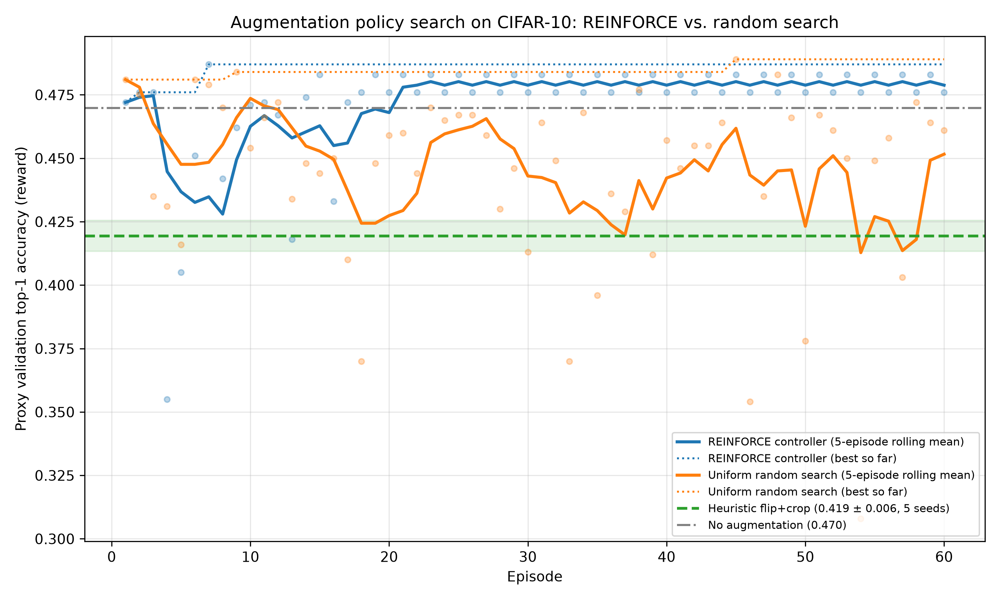
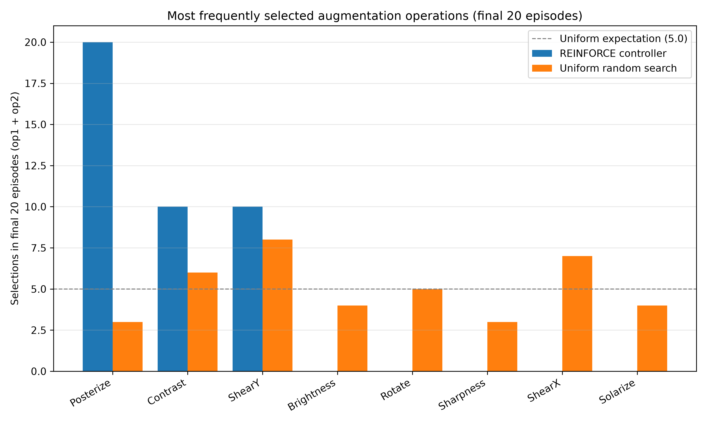

This project formulates data-augmentation policy search as a discrete Reinforcement Learning problem. A stochastic controller proposes transformation policies, an environment trains a proxy classification model using the augmented distribution, and the resulting validation accuracy is returned as the scalar reward signal.
The action space A consists of candidate sub-policies. A sub-policy applies two operations sequentially to an image, where each operation is parameterized by an operation type, application probability, and magnitude:
a = (op1, prob1, mag1, op2, prob2, mag2) ∈ (O × P × M)2
Because the proxy classifier is trained from scratch per episode, the environment functions as a contextual bandit. The controller state st ∈ R58 consists of:
Given action at:
SmallProxyNet (3 Conv-BN-ReLU-MaxPool blocks → Linear
classifier) with a fixed seed to eliminate weight initialization variance.The reward Rt ∈ [0, 1] is the proxy validation accuracy. The policy network is optimized via REINFORCE with an Exponential Moving Average (EMA) variance-normalized baseline:
bt = β bt-1 + (1 - β) Rt, (β = 0.9)
L(θ) = - ∑ log πθ(at | st) · clip((Rt - bt-1) / σt-1, -3, 3) - λH H[πθ]
The search was executed for 60 episodes across REINFORCE and Uniform Random Search, and benchmarked against standard heuristic augmentation (Random Horizontal Flip + Random Crop 4px) across 5 random seeds.
| Method / Configuration | Episodes / Seeds | Initial Acc (First 5) | Final Acc (Last 5) | Mean Proxy Acc | Peak Proxy Acc |
|---|---|---|---|---|---|
| REINFORCE Controller | 60 episodes | 0.4368 | 0.4788 | 0.4722 | 0.4870 |
| Uniform Random Search | 60 episodes | 0.4476 | 0.4516 | 0.4451 | 0.4890 |
| Heuristic (Flip + Crop) | 5 seeds | — | — | 0.4194 ± 0.0061 | 0.4280 |
| No Augmentation (Reference) | 5 seeds | — | — | 0.4698 ± 0.0124 | 0.4890 |
| Source | Op 1 | Prob 1 | Mag 1 | Op 2 | Prob 2 | Mag 2 | Proxy Acc |
|---|---|---|---|---|---|---|---|
| REINFORCE Best | ShearY | 0.9 | 2 | Contrast | 0.9 | 1 | 0.4870 |
| Random Search Best | Contrast | 0.7 | 0 | Posterize | 0.9 | 4 | 0.4890 |
To evaluate policy transferability, a larger 3-block ConvNet was trained on 10,000 CIFAR-10 images for 20 epochs and evaluated on the full 10,000-image test set:
| Training Policy | Test Accuracy | Δ vs. Heuristic | Training Time |
|---|---|---|---|
| Heuristic Baseline (Flip + Crop) | 79.93% | 0.00 pp | 306.7 s |
| Heuristic + REINFORCE Best Policy | 79.37% | -0.56 pp | 346.5 s |
| Heuristic + Random Search Best Policy | 79.33% | -0.60 pp | 365.1 s |


src/main.pyComplete, functional implementation without comments, structured in idiomatic PyTorch.
import argparse
import csv
import json
import math
import os
import random
import time
from dataclasses import dataclass
from pathlib import Path
import numpy as np
import torch
import torch.nn as nn
import torch.nn.functional as F
import torchvision
from PIL import Image, ImageEnhance, ImageOps
from torchvision.datasets import CIFAR10
ROOT = Path(__file__).resolve().parent.parent
DATA_DIR = ROOT / "data"
RESULTS_DIR = ROOT / "results"
MEAN = np.array([0.4914, 0.4822, 0.4465], dtype=np.float32)
STD = np.array([0.2470, 0.2435, 0.2616], dtype=np.float32)
FILL = (128, 128, 128)
PROB_LEVELS = [round(0.1 * (i + 1), 1) for i in range(10)]
MAG_LEVELS = list(range(10))
def set_seed(seed):
random.seed(seed)
np.random.seed(seed)
torch.manual_seed(seed)
if torch.cuda.is_available():
torch.cuda.manual_seed_all(seed)
def get_device():
return torch.device("cuda" if torch.cuda.is_available() else "cpu")
def fork_devices():
return list(range(torch.cuda.device_count())) if torch.cuda.is_available() else []
def random_sign(value, rng):
return value if rng.random() < 0.5 else -value
class Operation:
name = "Operation"
def __call__(self, img, magnitude, rng):
return self.apply(img, magnitude / 9.0, rng)
def apply(self, img, level, rng):
raise NotImplementedError
class ShearX(Operation):
name = "ShearX"
def apply(self, img, level, rng):
shear = random_sign(level * 0.3, rng)
return img.transform(img.size, Image.Transform.AFFINE, (1, shear, -shear * img.size[1] / 2, 0, 1, 0), resample=Image.Resampling.BICUBIC, fillcolor=FILL)
class ShearY(Operation):
name = "ShearY"
def apply(self, img, level, rng):
shear = random_sign(level * 0.3, rng)
return img.transform(img.size, Image.Transform.AFFINE, (1, 0, 0, shear, 1, -shear * img.size[0] / 2), resample=Image.Resampling.BICUBIC, fillcolor=FILL)
class Rotate(Operation):
name = "Rotate"
def apply(self, img, level, rng):
return img.rotate(random_sign(level * 30.0, rng), resample=Image.Resampling.BICUBIC, fillcolor=FILL)
class Solarize(Operation):
name = "Solarize"
def apply(self, img, level, rng):
return ImageOps.solarize(img, threshold=int(256 - level * 256))
class Posterize(Operation):
name = "Posterize"
def apply(self, img, level, rng):
return ImageOps.posterize(img, 8 - int(round(level * 4)))
class Contrast(Operation):
name = "Contrast"
def apply(self, img, level, rng):
return ImageEnhance.Contrast(img).enhance(1.0 + random_sign(level * 0.9, rng))
class Brightness(Operation):
name = "Brightness"
def apply(self, img, level, rng):
return ImageEnhance.Brightness(img).enhance(1.0 + random_sign(level * 0.9, rng))
class Sharpness(Operation):
name = "Sharpness"
def apply(self, img, level, rng):
return ImageEnhance.Sharpness(img).enhance(1.0 + random_sign(level * 0.9, rng))
OPERATIONS = [ShearX(), ShearY(), Rotate(), Solarize(), Posterize(), Contrast(), Brightness(), Sharpness()]
OPERATION_NAMES = [op.name for op in OPERATIONS]
HEAD_SIZES = {
"op1": len(OPERATIONS),
"prob1": len(PROB_LEVELS),
"mag1": len(MAG_LEVELS),
"op2": len(OPERATIONS),
"prob2": len(PROB_LEVELS),
"mag2": len(MAG_LEVELS),
}
STATE_DIM = sum(HEAD_SIZES.values()) + 2
@dataclass(frozen=True)
class SubPolicy:
op1: int
prob1: int
mag1: int
op2: int
prob2: int
mag2: int
def __call__(self, img, rng):
for op, prob, mag in ((self.op1, self.prob1, self.mag1), (self.op2, self.prob2, self.mag2)):
if rng.random() < PROB_LEVELS[prob]:
img = OPERATIONS[op](img, MAG_LEVELS[mag], rng)
return img
def indices(self):
return {key: getattr(self, key) for key in HEAD_SIZES}
def readable(self):
return {
"op1": OPERATION_NAMES[self.op1],
"prob1": PROB_LEVELS[self.prob1],
"mag1": MAG_LEVELS[self.mag1],
"op2": OPERATION_NAMES[self.op2],
"prob2": PROB_LEVELS[self.prob2],
"mag2": MAG_LEVELS[self.mag2],
}
def describe(self):
r = self.readable()
return f"({r['op1']}, p={r['prob1']}, m={r['mag1']}) -> ({r['op2']}, p={r['prob2']}, m={r['mag2']})"
@classmethod
def from_readable(cls, data):
return cls(
OPERATION_NAMES.index(data["op1"]),
PROB_LEVELS.index(data["prob1"]),
MAG_LEVELS.index(data["mag1"]),
OPERATION_NAMES.index(data["op2"]),
PROB_LEVELS.index(data["prob2"]),
MAG_LEVELS.index(data["mag2"]),
)
@classmethod
def random(cls, generator):
return cls(**{key: int(torch.randint(size, (1,), generator=generator).item()) for key, size in HEAD_SIZES.items()})
def flip_crop(arr, rng, padding=4):
if rng.random() < 0.5:
arr = arr[:, ::-1]
padded = np.pad(arr, ((padding, padding), (padding, padding), (0, 0)), mode="constant")
i, j = rng.integers(0, 2 * padding + 1, size=2)
return padded[i:i + arr.shape[0], j:j + arr.shape[1]]
def make_transform(policy=None, standard=False):
if policy is None and not standard:
return None
def transform(arr, rng):
if policy is not None:
arr = np.asarray(policy(Image.fromarray(arr), rng))
if standard:
arr = flip_crop(arr, rng)
return arr
return transform
def apply_transform(images, transform, rng):
if transform is None:
return images
return np.stack([transform(img, rng) for img in images])
def to_tensor(images):
normalized = (images.astype(np.float32) / 255.0 - MEAN) / STD
return torch.from_numpy(np.ascontiguousarray(normalized.transpose(0, 3, 1, 2)))
class SmallProxyNet(nn.Module):
def __init__(self, num_classes=10):
super().__init__()
self.features = nn.Sequential(
nn.Conv2d(3, 32, 3, padding=1, bias=False),
nn.BatchNorm2d(32),
nn.ReLU(inplace=True),
nn.MaxPool2d(2),
nn.Conv2d(32, 64, 3, padding=1, bias=False),
nn.BatchNorm2d(64),
nn.ReLU(inplace=True),
nn.MaxPool2d(2),
nn.Conv2d(64, 128, 3, padding=1, bias=False),
nn.BatchNorm2d(128),
nn.ReLU(inplace=True),
nn.MaxPool2d(2),
)
self.classifier = nn.Linear(128 * 4 * 4, num_classes)
def forward(self, x):
return self.classifier(torch.flatten(self.features(x), 1))
def conv_block(in_channels, out_channels):
return nn.Sequential(
nn.Conv2d(in_channels, out_channels, 3, padding=1, bias=False),
nn.BatchNorm2d(out_channels),
nn.ReLU(inplace=True),
nn.Conv2d(out_channels, out_channels, 3, padding=1, bias=False),
nn.BatchNorm2d(out_channels),
nn.ReLU(inplace=True),
nn.MaxPool2d(2),
)
class TargetConvNet(nn.Module):
def __init__(self, num_classes=10):
super().__init__()
self.features = nn.Sequential(conv_block(3, 32), conv_block(32, 64), conv_block(64, 128))
self.classifier = nn.Sequential(nn.Flatten(), nn.Dropout(0.3), nn.Linear(128 * 4 * 4, num_classes))
def forward(self, x):
return self.classifier(self.features(x))
def build_target_model(arch):
if arch == "resnet18":
model = torchvision.models.resnet18(num_classes=10)
model.conv1 = nn.Conv2d(3, 64, 3, stride=1, padding=1, bias=False)
model.maxpool = nn.Identity()
return model
return TargetConvNet()
class PolicyController(nn.Module):
def __init__(self, hidden=64):
super().__init__()
self.body = nn.Sequential(nn.Linear(STATE_DIM, hidden), nn.Tanh(), nn.Linear(hidden, hidden), nn.Tanh())
self.heads = nn.ModuleDict({key: nn.Linear(hidden, size) for key, size in HEAD_SIZES.items()})
for head in self.heads.values():
nn.init.zeros_(head.weight)
nn.init.zeros_(head.bias)
def forward(self, state):
hidden = self.body(state)
return {key: head(hidden) for key, head in self.heads.items()}
def distributions(self, state):
return {key: torch.distributions.Categorical(logits=logits) for key, logits in self(state).items()}
def sample(self, state, generator):
dists = self.distributions(state)
actions = {key: int(torch.multinomial(dist.probs.detach(), 1, generator=generator).item()) for key, dist in dists.items()}
policy = SubPolicy(**actions)
return policy, self.log_prob_from(dists, policy), self.entropy_from(dists)
def evaluate(self, state, policy):
dists = self.distributions(state)
return self.log_prob_from(dists, policy), self.entropy_from(dists)
def greedy(self, state):
with torch.no_grad():
return SubPolicy(**{key: int(logits.argmax().item()) for key, logits in self(state).items()})
def marginals(self, state):
with torch.no_grad():
return {key: torch.softmax(logits, dim=-1).tolist() for key, logits in self(state).items()}
@staticmethod
def log_prob_from(dists, policy):
return sum(dists[key].log_prob(torch.tensor(value)) for key, value in policy.indices().items())
@staticmethod
def entropy_from(dists):
return sum(dist.entropy() for dist in dists.values())
class EMABaseline:
def __init__(self, decay, initial_value, initial_std=0.02):
self.decay = decay
self.value = initial_value
self.variance = initial_std ** 2
def normalize(self, advantage, clip=3.0):
return float(np.clip(advantage / (math.sqrt(self.variance) + 1e-8), -clip, clip))
def update(self, reward):
advantage = reward - self.value
self.variance = self.decay * self.variance + (1 - self.decay) * advantage ** 2
self.value = self.decay * self.value + (1 - self.decay) * reward
def encode_state(prev_policy, prev_reward, baseline):
parts = []
for key, size in HEAD_SIZES.items():
one_hot = torch.zeros(size)
if prev_policy is not None:
one_hot[getattr(prev_policy, key)] = 1.0
parts.append(one_hot)
parts.append(torch.tensor([prev_reward, baseline], dtype=torch.float32))
return torch.cat(parts)
@dataclass
class Context:
args: argparse.Namespace
device: torch.device
proxy_train_x: np.ndarray
proxy_train_y: np.ndarray
proxy_val_x: torch.Tensor
proxy_val_y: torch.Tensor
target_train_x: np.ndarray
target_train_y: np.ndarray
test_x: torch.Tensor
test_y: torch.Tensor
def load_context(args, device):
train_set = CIFAR10(root=str(DATA_DIR), train=True, download=True)
test_set = CIFAR10(root=str(DATA_DIR), train=False, download=True)
images, labels = train_set.data, np.array(train_set.targets)
order = np.random.default_rng(args.seed).permutation(len(images))
train_idx = order[:args.train_size]
val_idx = order[args.train_size:args.train_size + args.val_size]
target_idx = order[:args.target_size]
return Context(
args=args,
device=device,
proxy_train_x=images[train_idx],
proxy_train_y=labels[train_idx],
proxy_val_x=to_tensor(images[val_idx]),
proxy_val_y=torch.as_tensor(labels[val_idx]),
target_train_x=images[target_idx],
target_train_y=labels[target_idx],
test_x=to_tensor(test_set.data),
test_y=torch.as_tensor(np.array(test_set.targets)),
)
@torch.no_grad()
def evaluate(model, images, labels, device, batch_size=1000):
model.eval()
correct = 0
for start in range(0, len(images), batch_size):
logits = model(images[start:start + batch_size].to(device))
correct += (logits.argmax(1).cpu() == labels[start:start + batch_size]).sum().item()
return correct / len(images)
def train_and_evaluate(model, train_x, train_y, eval_x, eval_y, epochs, transform, seed, device, batch_size=128, max_lr=3e-3, weight_decay=5e-4, verbose=False):
rng = np.random.default_rng(seed)
model.to(device)
optimizer = torch.optim.AdamW(model.parameters(), lr=max_lr, weight_decay=weight_decay)
steps_per_epoch = math.ceil(len(train_x) / batch_size)
scheduler = torch.optim.lr_scheduler.OneCycleLR(optimizer, max_lr=max_lr, total_steps=epochs * steps_per_epoch)
labels = torch.as_tensor(train_y, dtype=torch.long)
for epoch in range(epochs):
start_time = time.perf_counter()
model.train()
images = to_tensor(apply_transform(train_x, transform, rng))
order = torch.as_tensor(rng.permutation(len(train_x)))
total_loss = 0.0
for start in range(0, len(order), batch_size):
idx = order[start:start + batch_size]
xb, yb = images[idx].to(device), labels[idx].to(device)
loss = F.cross_entropy(model(xb), yb)
optimizer.zero_grad(set_to_none=True)
loss.backward()
optimizer.step()
scheduler.step()
total_loss += loss.item() * len(idx)
if verbose:
print(f" epoch {epoch + 1:02d}/{epochs} loss={total_loss / len(order):.4f} time={time.perf_counter() - start_time:.1f}s", flush=True)
return evaluate(model, eval_x, eval_y, device)
def run_proxy(ctx, transform, seed):
with torch.random.fork_rng(devices=fork_devices()):
torch.manual_seed(seed)
model = SmallProxyNet()
return train_and_evaluate(model, ctx.proxy_train_x, ctx.proxy_train_y, ctx.proxy_val_x, ctx.proxy_val_y, ctx.args.proxy_epochs, transform, seed, ctx.device)
def write_csv(path, rows):
with open(path, "w", newline="") as handle:
writer = csv.DictWriter(handle, fieldnames=list(rows[0].keys()))
writer.writeheader()
writer.writerows(rows)
def write_json(path, data):
with open(path, "w") as handle:
json.dump(data, handle, indent=2)
def read_json(path):
with open(path) as handle:
return json.load(handle)
def run_heuristic(ctx):
args = ctx.args
seeds = [args.seed + i for i in range(args.heuristic_seeds)]
standard, no_aug = [], []
for seed in seeds:
start = time.perf_counter()
standard.append(run_proxy(ctx, make_transform(standard=True), seed))
no_aug.append(run_proxy(ctx, None, seed))
print(f"[heuristic] seed={seed} flip+crop={standard[-1]:.4f} no_aug={no_aug[-1]:.4f} time={time.perf_counter() - start:.1f}s", flush=True)
result = {
"seeds": seeds,
"heuristic_accuracies": standard,
"heuristic_mean": float(np.mean(standard)),
"heuristic_std": float(np.std(standard)),
"no_aug_accuracies": no_aug,
"no_aug_mean": float(np.mean(no_aug)),
"no_aug_std": float(np.std(no_aug)),
}
write_json(RESULTS_DIR / "heuristic_baseline.json", result)
print(f"[heuristic] mean={result['heuristic_mean']:.4f} std={result['heuristic_std']:.4f} | no_aug mean={result['no_aug_mean']:.4f}", flush=True)
return result
def run_search(ctx, mode):
args = ctx.args
reference = run_proxy(ctx, None, args.seed)
controller = PolicyController(args.controller_hidden)
optimizer = torch.optim.Adam(controller.parameters(), lr=args.controller_lr)
generator = torch.Generator().manual_seed(args.seed if mode == "rl" else args.seed + 1)
baseline = EMABaseline(args.ema_decay, reference)
prev_policy, prev_reward = None, reference
rows = []
print(f"[{mode}] reference no-augmentation reward={reference:.4f}", flush=True)
for episode in range(1, args.episodes + 1):
start = time.perf_counter()
state = encode_state(prev_policy, prev_reward, baseline.value)
if mode == "rl":
policy, log_prob, entropy = controller.sample(state, generator)
else:
policy = SubPolicy.random(generator)
with torch.no_grad():
log_prob, entropy = controller.evaluate(state, policy)
reward = run_proxy(ctx, make_transform(policy=policy), args.seed)
baseline_value = baseline.value
advantage = reward - baseline_value
scaled_advantage = baseline.normalize(advantage)
loss = -log_prob * scaled_advantage - args.entropy_coef * entropy
if mode == "rl":
optimizer.zero_grad(set_to_none=True)
loss.backward()
optimizer.step()
baseline.update(reward)
elapsed = time.perf_counter() - start
rows.append({
"episode": episode,
**policy.readable(),
**{f"{key}_idx": value for key, value in policy.indices().items()},
"reward": round(reward, 6),
"baseline": round(baseline_value, 6),
"advantage": round(advantage, 6),
"scaled_advantage": round(scaled_advantage, 6),
"log_prob": round(float(log_prob.item()), 6),
"entropy": round(float(entropy.item()), 6),
"loss": round(float(loss.item()), 6),
"seconds": round(elapsed, 3),
})
print(f"[{mode}] ep={episode:02d} reward={reward:.4f} baseline={baseline_value:.4f} H={entropy.item():.3f} {policy.describe()} ({elapsed:.1f}s)", flush=True)
prev_policy, prev_reward = policy, reward
write_csv(RESULTS_DIR / f"{mode}_search_log.csv", rows)
best = max(rows, key=lambda row: row["reward"])
best_policy = {key: best[key] for key in ("op1", "prob1", "mag1", "op2", "prob2", "mag2")}
summary = {"mode": mode, "reference_no_aug": reference, "best_episode": best["episode"], "best_reward": best["reward"], "best_policy": best_policy}
if mode == "rl":
final_state = encode_state(prev_policy, prev_reward, baseline.value)
summary["greedy_policy"] = controller.greedy(final_state).readable()
summary["final_marginals"] = controller.marginals(final_state)
summary["operation_names"] = OPERATION_NAMES
torch.save(controller.state_dict(), RESULTS_DIR / "controller.pt")
write_json(RESULTS_DIR / f"{mode}_best_policy.json", summary)
print(f"[{mode}] best episode={best['episode']} reward={best['reward']:.4f} policy={best_policy}", flush=True)
return summary
def run_target(ctx):
args = ctx.args
arch = args.target_arch if args.target_arch != "auto" else ("resnet18" if ctx.device.type == "cuda" else "convnet")
configs = [("heuristic (flip+crop)", make_transform(standard=True), None)]
for mode in ("rl", "random"):
path = RESULTS_DIR / f"{mode}_best_policy.json"
if path.exists() and (mode == "rl" or args.target_include_random):
policy = SubPolicy.from_readable(read_json(path)["best_policy"])
configs.append((f"heuristic + {mode} best policy", make_transform(policy=policy, standard=True), policy.readable()))
results = []
for name, transform, policy in configs:
print(f"[target] arch={arch} config={name}", flush=True)
start = time.perf_counter()
with torch.random.fork_rng(devices=fork_devices()):
torch.manual_seed(args.seed)
model = build_target_model(arch)
accuracy = train_and_evaluate(model, ctx.target_train_x, ctx.target_train_y, ctx.test_x, ctx.test_y, args.target_epochs, transform, args.seed, ctx.device, verbose=True)
elapsed = time.perf_counter() - start
results.append({"config": name, "policy": policy, "test_accuracy": accuracy, "seconds": round(elapsed, 1)})
print(f"[target] {name}: test accuracy={accuracy:.4f} ({elapsed:.1f}s)", flush=True)
output = {"arch": arch, "train_size": len(ctx.target_train_x), "epochs": args.target_epochs, "test_size": len(ctx.test_x), "results": results}
write_json(RESULTS_DIR / "target_validation.json", output)
return output
def parse_args():
parser = argparse.ArgumentParser(description="REINFORCE data-augmentation policy search on CIFAR-10")
parser.add_argument("--modes", nargs="+", default=["heuristic", "rl", "random", "target"], choices=["heuristic", "rl", "random", "target"])
parser.add_argument("--seed", type=int, default=42)
parser.add_argument("--episodes", type=int, default=60)
parser.add_argument("--train-size", type=int, default=2000)
parser.add_argument("--val-size", type=int, default=1000)
parser.add_argument("--proxy-epochs", type=int, default=3)
parser.add_argument("--heuristic-seeds", type=int, default=5)
parser.add_argument("--controller-lr", type=float, default=0.02)
parser.add_argument("--controller-hidden", type=int, default=64)
parser.add_argument("--entropy-coef", type=float, default=0.01)
parser.add_argument("--ema-decay", type=float, default=0.9)
parser.add_argument("--target-size", type=int, default=10000)
parser.add_argument("--target-epochs", type=int, default=20)
parser.add_argument("--target-arch", default="auto", choices=["auto", "convnet", "resnet18"])
parser.add_argument("--target-include-random", action=argparse.BooleanOptionalAction, default=True)
parser.add_argument("--results-dir", default=str(RESULTS_DIR))
return parser.parse_args()
def main():
global RESULTS_DIR
args = parse_args()
RESULTS_DIR = Path(args.results_dir).resolve()
RESULTS_DIR.mkdir(parents=True, exist_ok=True)
set_seed(args.seed)
torch.set_num_threads(os.cpu_count() or 1)
device = get_device()
print(f"device={device} torch={torch.__version__} threads={torch.get_num_threads()}", flush=True)
write_json(RESULTS_DIR / "run_config.json", {"device": str(device), "torch": torch.__version__, "threads": torch.get_num_threads(), **vars(args)})
ctx = load_context(args, device)
total = time.perf_counter()
if "heuristic" in args.modes:
run_heuristic(ctx)
for mode in ("rl", "random"):
if mode in args.modes:
run_search(ctx, mode)
if "target" in args.modes:
run_target(ctx)
print(f"done in {time.perf_counter() - total:.1f}s", flush=True)
if __name__ == "__main__":
main()
src/plot_results.pyVisualization and markdown table generation script.
import argparse
import csv
import json
import sys
from collections import Counter
from pathlib import Path
import matplotlib
matplotlib.use("Agg")
import matplotlib.pyplot as plt
import numpy as np
ROOT = Path(__file__).resolve().parent.parent
POLICY_KEYS = ("op1", "prob1", "mag1", "op2", "prob2", "mag2")
def read_csv(path):
if not path.exists():
return []
with open(path, newline="") as handle:
return list(csv.DictReader(handle))
def read_json(path):
if not path.exists():
return None
with open(path) as handle:
return json.load(handle)
def rolling_mean(values, window):
return np.array([np.mean(values[max(0, i - window + 1):i + 1]) for i in range(len(values))])
def rewards_of(rows):
return np.array([float(row["reward"]) for row in rows])
def plot_learning_curve(rl_rows, random_rows, heuristic, output, window):
fig, ax = plt.subplots(figsize=(10, 6))
for rows, label, color in ((rl_rows, "REINFORCE controller", "tab:blue"), (random_rows, "Uniform random search", "tab:orange")):
if not rows:
continue
episodes = np.array([int(row["episode"]) for row in rows])
rewards = rewards_of(rows)
ax.plot(episodes, rewards, "o", color=color, alpha=0.3, markersize=4)
ax.plot(episodes, rolling_mean(rewards, window), "-", color=color, linewidth=2.2, label=f"{label} ({window}-episode rolling mean)")
ax.plot(episodes, np.maximum.accumulate(rewards), ":", color=color, linewidth=1.4, label=f"{label} (best so far)")
if heuristic:
mean, std = heuristic["heuristic_mean"], heuristic["heuristic_std"]
ax.axhline(mean, color="tab:green", linestyle="--", linewidth=2, label=f"Heuristic flip+crop ({mean:.3f} ± {std:.3f}, 5 seeds)")
ax.axhspan(mean - std, mean + std, color="tab:green", alpha=0.12)
ax.axhline(heuristic["no_aug_mean"], color="gray", linestyle="-.", linewidth=1.5, label=f"No augmentation ({heuristic['no_aug_mean']:.3f})")
ax.set_xlabel("Episode")
ax.set_ylabel("Proxy validation top-1 accuracy (reward)")
ax.set_title("Augmentation policy search on CIFAR-10: REINFORCE vs. random search")
ax.grid(alpha=0.3)
ax.legend(fontsize=8, loc="lower right")
fig.tight_layout()
fig.savefig(output, dpi=300)
plt.close(fig)
def operation_counts(rows, last_n):
counter = Counter()
for row in rows[-last_n:]:
counter[row["op1"]] += 1
counter[row["op2"]] += 1
return counter
def plot_policy_distribution(rl_rows, random_rows, rl_best, output, last_n):
rl_counts = operation_counts(rl_rows, last_n)
random_counts = operation_counts(random_rows, last_n)
names = (rl_best or {}).get("operation_names") or sorted(set(rl_counts) | set(random_counts))
names = sorted(names, key=lambda name: (-rl_counts.get(name, 0), name))
x = np.arange(len(names))
width = 0.4
fig, ax = plt.subplots(figsize=(10, 6))
ax.bar(x - width / 2, [rl_counts.get(name, 0) for name in names], width, label="REINFORCE controller", color="tab:blue")
ax.bar(x + width / 2, [random_counts.get(name, 0) for name in names], width, label="Uniform random search", color="tab:orange")
expected = 2 * min(last_n, max(len(rl_rows), 1)) / max(len(names), 1)
ax.axhline(expected, color="gray", linestyle="--", linewidth=1, label=f"Uniform expectation ({expected:.1f})")
ax.set_xticks(x)
ax.set_xticklabels(names, rotation=30, ha="right")
ax.set_ylabel(f"Selections in final {last_n} episodes (op1 + op2)")
ax.set_title(f"Most frequently selected augmentation operations (final {last_n} episodes)")
ax.grid(axis="y", alpha=0.3)
ax.legend()
fig.tight_layout()
fig.savefig(output, dpi=300)
plt.close(fig)
def fmt(value):
return "n/a" if value is None else f"{value:.4f}"
def search_stats(rows, k):
if not rows:
return None
rewards = rewards_of(rows)
return {"initial": float(rewards[:k].mean()), "final": float(rewards[-k:].mean()), "peak": float(rewards.max()), "mean": float(rewards.mean()), "episodes": len(rows)}
def policy_row(label, policy, reward):
if not policy:
return f"| {label} | n/a | n/a | n/a | n/a | n/a | n/a | n/a |"
return f"| {label} | {policy['op1']} | {policy['prob1']} | {policy['mag1']} | {policy['op2']} | {policy['prob2']} | {policy['mag2']} | {fmt(reward)} |"
def build_summary(rl_rows, random_rows, heuristic, rl_best, random_best, target, k):
rl_stats, random_stats = search_stats(rl_rows, k), search_stats(random_rows, k)
lines = ["# Results Summary", "", f"## Search performance (initial = mean of first {k} episodes, final = mean of last {k} episodes)", ""]
lines += ["| Method | Episodes | Initial Acc | Final Acc | Mean Acc | Peak Acc |", "|---|---|---|---|---|---|"]
for label, stats in (("REINFORCE controller", rl_stats), ("Uniform random search", random_stats)):
if stats:
lines.append(f"| {label} | {stats['episodes']} | {fmt(stats['initial'])} | {fmt(stats['final'])} | {fmt(stats['mean'])} | {fmt(stats['peak'])} |")
if heuristic:
accs = heuristic["heuristic_accuracies"]
lines.append(f"| Heuristic flip+crop ({len(accs)} seeds) | - | - | - | {fmt(heuristic['heuristic_mean'])} ± {heuristic['heuristic_std']:.4f} | {fmt(max(accs))} |")
lines.append(f"| No augmentation ({len(heuristic['no_aug_accuracies'])} seeds) | - | - | - | {fmt(heuristic['no_aug_mean'])} ± {heuristic['no_aug_std']:.4f} | {fmt(max(heuristic['no_aug_accuracies']))} |")
lines += ["", "## Peak proxy accuracy", "", "| Heuristic | Random Search | RL Controller |", "|---|---|---|"]
lines.append(f"| {fmt(max(heuristic['heuristic_accuracies']) if heuristic else None)} | {fmt(random_stats['peak'] if random_stats else None)} | {fmt(rl_stats['peak'] if rl_stats else None)} |")
lines += ["", "## Best sub-policy found", "", "| Source | Operation 1 | Prob 1 | Mag 1 | Operation 2 | Prob 2 | Mag 2 | Proxy Acc |", "|---|---|---|---|---|---|---|---|"]
lines.append(policy_row("REINFORCE (best episode)", rl_best and rl_best["best_policy"], rl_best and rl_best["best_reward"]))
if rl_best and rl_best.get("greedy_policy"):
lines.append(policy_row("REINFORCE (final greedy)", rl_best["greedy_policy"], None))
lines.append(policy_row("Random search (best episode)", random_best and random_best["best_policy"], random_best and random_best["best_reward"]))
if target:
lines += ["", f"## Target model validation ({target['arch']}, {target['train_size']} train images, {target['epochs']} epochs, {target['test_size']} CIFAR-10 test images)", ""]
lines += ["| Configuration | Test Accuracy | Δ vs Heuristic | Train Time (s) |", "|---|---|---|---|"]
reference = target["results"][0]["test_accuracy"]
for result in target["results"]:
delta = result["test_accuracy"] - reference
lines.append(f"| {result['config']} | {fmt(result['test_accuracy'])} | {delta * 100:+.2f} pp | {result['seconds']} |")
return "\n".join(lines) + "\n"
def main():
parser = argparse.ArgumentParser(description="Plot augmentation search results")
parser.add_argument("--results-dir", default=str(ROOT / "results"))
parser.add_argument("--docs-dir", default=str(ROOT / "docs"))
parser.add_argument("--window", type=int, default=5)
parser.add_argument("--last-n", type=int, default=20)
args = parser.parse_args()
results_dir, docs_dir = Path(args.results_dir), Path(args.docs_dir)
docs_dir.mkdir(parents=True, exist_ok=True)
rl_rows = read_csv(results_dir / "rl_search_log.csv")
random_rows = read_csv(results_dir / "random_search_log.csv")
heuristic = read_json(results_dir / "heuristic_baseline.json")
rl_best = read_json(results_dir / "rl_best_policy.json")
random_best = read_json(results_dir / "random_best_policy.json")
target = read_json(results_dir / "target_validation.json")
plot_learning_curve(rl_rows, random_rows, heuristic, results_dir / "learning_curve.png", args.window)
plot_policy_distribution(rl_rows, random_rows, rl_best, results_dir / "policy_distribution.png", args.last_n)
summary = build_summary(rl_rows, random_rows, heuristic, rl_best, random_best, target, args.window)
(results_dir / "summary.md").write_text(summary, encoding="utf-8")
(docs_dir / "results_summary.md").write_text(summary, encoding="utf-8")
sys.stdout.reconfigure(encoding="utf-8")
print(summary)
if __name__ == "__main__":
main()